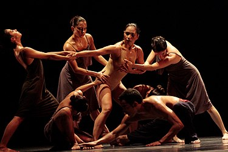

La danza o el baile es un arte donde se utiliza el movimiento de las partes del cuerpo generalmente con música, como una forma de expresión y de interacción social con fines de entretenimiento, artísticos o religiosos. Es el movimiento en el espacio que se realiza con una parte o todo el cuerpo del ejecutante, con cierto compás o ritmo como expresión de sentimientos individuales o de símbolos de la cultura y la sociedad. En este sentido, la danza también es una forma de comunicación; se usa el lenguaje no verbal entre los seres humanos donde el bailarín o bailarina expresa sentimientos y emociones a través de sus movimientos y gestos. Se realiza mayormente con música, ya sea una canción, pieza musical o sonidos. Los primeros en reconocer la danza como un arte fueron los griegos que le dedicaron en su mitología una musa. Terpsícore. Su práctica estaba ligada al culto del dios Dioniso y, junto con la poesía y la música, era elemento indispensable de la tragedia griega, donde la catarsis ponía al individuo en relación con los dioses; aunque también entre los griegos cumplía la danza una función de comunicación y cohesión social
La danza ha ido evolucionando en muchos estilos desde la danza académica o ballet, hasta el breakdance y el krumping. Las definiciones que constituyen a la danza dependen de factores sociales, culturales, estéticos, artísticos y morales; así como también del rango de movimiento funcional (como la danza folclórica) hasta las técnicas virtuosas (como el ballet). Cada danza, independientemente del estilo, tiene algo en común: implica tener flexibilidad y movimiento del cuerpo, así como buena condición física
El ballet clásico es posiblemente la forma de danza más conocida y venerada en el mundo. Surgiendo en la corte francesa en el siglo XVII, el ballet clásico es caracterizado por la técnica depurada, la gracia y la narrativa en torno a la música clásica. Los bailarines llevan zapatillas de punta y ejecutan movimientos precisos, como pliés, relevés y arabesques, creando una experiencia visualmente impresionante.
En contraste con la rigidez del ballet clásico, la danza contemporánea surge como una forma más libre y experimental. Rompiendo con las convenciones tradicionales, los bailarines de danza contemporánea exploran movimientos más fluidos, expresiones abstractas y conexiones emocionales más profundas. Esta forma de danza a menudo se nutre de la improvisación y se enfoca en la interpretación individual.
Con raíces en la música afroamericana, el jazz dance es una forma de danza llena de energía y vitalidad. Se caracteriza por movimientos enérgicos, giros rápidos y la incorporación de elementos de la música jazz. El jazz dance abarca una amplia gama de estilos, desde el jazz lírico hasta el teatro musical, y ha evolucionado a lo largo del tiempo para reflejar las tendencias musicales contemporáneas.
Originado en las comunidades urbanas, el hip hop no es solo un género musical, sino también un estilo de vida y una forma de expresión cultural. La danza hip hop incluye movimientos como el breaking, popping, locking y krumping. La improvisación y la individualidad son aspectos fundamentales de esta forma de danza, que se ha convertido en un fenómeno global.

La danza folklórica es un reflejo de la identidad cultural de diversas comunidades en todo el mundo. Cada región tiene su propio repertorio de danzas folklóricas, transmitidas de generación en generación. Estas danzas suelen estar acompañadas de música tradicional y vestimenta típica, y celebran eventos históricos, rituales religiosos o simplemente la vida cotidiana.
Los bailes de salón abarcan una variedad de estilos, desde el vals hasta el tango y el foxtrot. Estas danzas sociales se realizan en pareja y enfatizan la conexión y la comunicación entre los bailarines. Además de ser una forma de entretenimiento, los bailes de salón fomentan la elegancia, la coordinación y la socialización.
Originaria de Oriente Medio, la danza del vientre es conocida por sus movimientos sinuosos y la énfasis en la fuerza y la flexibilidad del torso. Esta forma de danza celebra la feminidad y la conexión con la tierra. Los bailarines de danza del vientre utilizan vestimenta tradicional y a menudo incorporan elementos de improvisación en sus actuaciones.
Los bailes latinos, como la salsa, la bachata y el merengue, son conocidos por su energía contagiosa y su conexión íntima entre los bailarines. Estas danzas reflejan la rica diversidad cultural de América Latina y han ganado popularidad en todo el mundo. Los movimientos rápidos de pies y las figuras elaboradas son características distintivas de estos bailes.
La danza aeróbica y de fitness combina movimientos de baile con ejercicios aeróbicos, ofreciendo una forma divertida de mantenerse en forma. Clases como el Zumba han ganado popularidad, fusionando estilos de baile con ritmos musicales energéticos para crear una experiencia de ejercicio divertida y efectiva.
En el mundo del teatro musical, la danza desempeña un papel crucial en la narrativa. Coreografías elaboradas se entrelazan con la trama y la música para contar historias de una manera única. Desde clásicos como "West Side Story" hasta producciones contemporáneas, la danza teatral es una fusión de expresión artística y actuación.
La danza es muy importante y como conclusion en la educación de todos los niveles pues comparte los beneficios del arte en general pero nos permite, de modo particular, observar, analizar, criticar, comparar, diferenciar, contextualizar, razonar, deducir, secuenciar, ordenar, respetar, etc. Además, permite articular el desarrollo de otras capacidades en forma transversal como el desarrollo de la motricidad fina y gruesa, seriación (orden y secuencia), percepción visual, percepción táctil, nociones espaciales y temporales (área lógico matemática). Así mismo, la danza coadyuva en el desarrollo y práctica de actitudes y valores como la paciencia, el respeto, disciplina, la alegría, la curiosidad y la vivencia del amor. La danza en su relación con el sistema nervioso central nos ayuda a desarrollar en los educandos memoria visual (recuerdo de imágenes), memoria auditiva (recuerdo de sonidos, ritmos) y memoria cinética (memoria de movimiento, secuencia de pasos o movimientos corporales). Además, es muy importante considerar que con la danza se favorece la conciencia del cuerpo, sus partes, sus funciones y sus posibilidades, lo cual es un punto de partida indispensable para la conciencia del ser humano en su complejidad.
Regreso